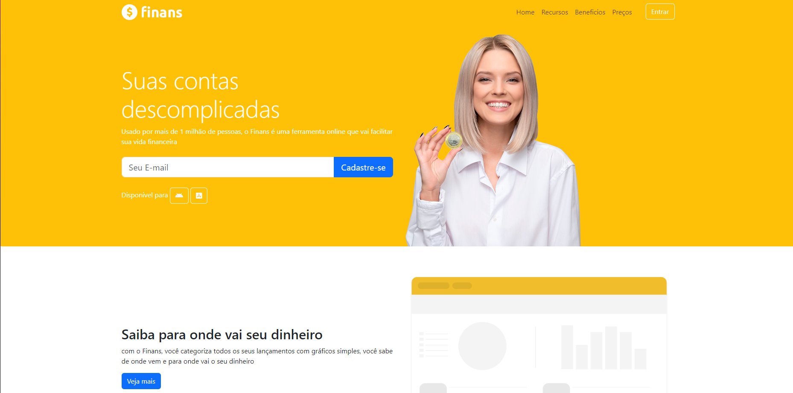
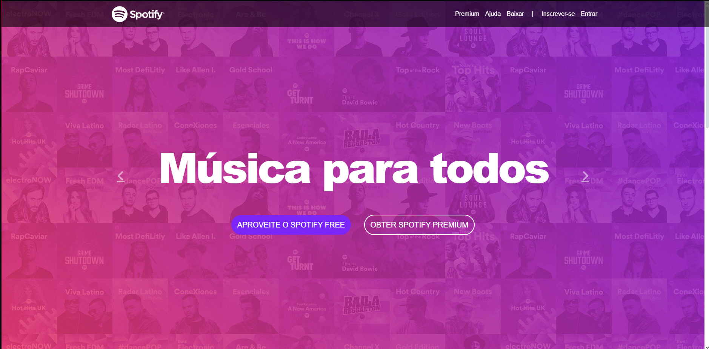

Projetos passados

Projeto baseado em HTML e CSS criando um homepage utilizando multi colunas e widht fixo
Link para o projeto

Projeto utilizando a framework Bootstrap para fazer um projeto responsivel para mobile
Link para o projeto

Projeto baseado na criação de uma homepage totalmente responsivel a mudanças de tamanho de tela utilizando a antiga home do spotfy como base
Link para o projeto
Base para o meu portifolio ainda em construção, umas das commits antes da adição do bootstrap foi a base para esse projeto em questão e um segundo link para o meu github
Link para o projeto Link para o github